Panorama
Los seis países en las dos fuentes, con una sola medida
β mide la fracción de tareas de una ocupación cuyo tiempo puede reducirse a la mitad o más con estas herramientas. El detalle de qué contiene y qué no, justo debajo.
La exposición del empleo total va de 0,209 en Guatemala a 0,285 en México —un rango que invita a ordenar a los países— y la de las vacantes en línea es sistemáticamente superior, entre 0,422 y 0,459. La clave está en el punto intermedio: la exposición del empleo formal va de 0,303 a 0,347, un rango de apenas cuatro centésimas. El empleo formal de los seis países está expuesto casi por igual.
| País | Encuesta | Empleo total | Formal | Vacantes | Brecha vs formal |
|---|---|---|---|---|---|
| México | ENOE 2025 | 0,285 | 0,347 | 0,446 | +0,10 |
| Costa Rica | ECE 2025 | 0,283 | 0,328 | 0,446 | +0,12 |
| Rep. Dominicana | ENCFT 2024 | 0,263 | 0,328 | 0,430 | +0,10 |
| El Salvador | EHPM 2025 | 0,243 | 0,303 | — | — |
| Honduras | EPHPM 2025 | 0,237 | 0,325 | 0,459 | +0,13 |
| Guatemala | ENCOVI 2023 | 0,209 | 0,327 | 0,422 | +0,10 |
Cobertura: los seis países de la región con encuesta de empleo en el kit. El Salvador aparece sin vacantes porque el Observatorio no las ha entregado, y Panamá no aparece porque no se dispone de ninguna de las dos fuentes. Cada país figura en su último año disponible, que no es el mismo para todos: 2025 salvo Rep. Dominicana (2024) y Guatemala (2023).
La brecha entre vacantes y empleo total correlaciona +0,89 con la informalidad de cada país. Restringida al empleo formal, esa correlación desaparece (−0,01) y la brecha se comprime a entre +0,10 y +0,13, sin ordenamiento reconocible. Lo que separaba a Guatemala y Honduras de México y Costa Rica no era la naturaleza de su empleo formal, sino cuánto empleo informal poco expuesto arrastraban en el promedio. La conversación sobre exposición a la IA en la región es, en buena medida, una conversación sobre informalidad.
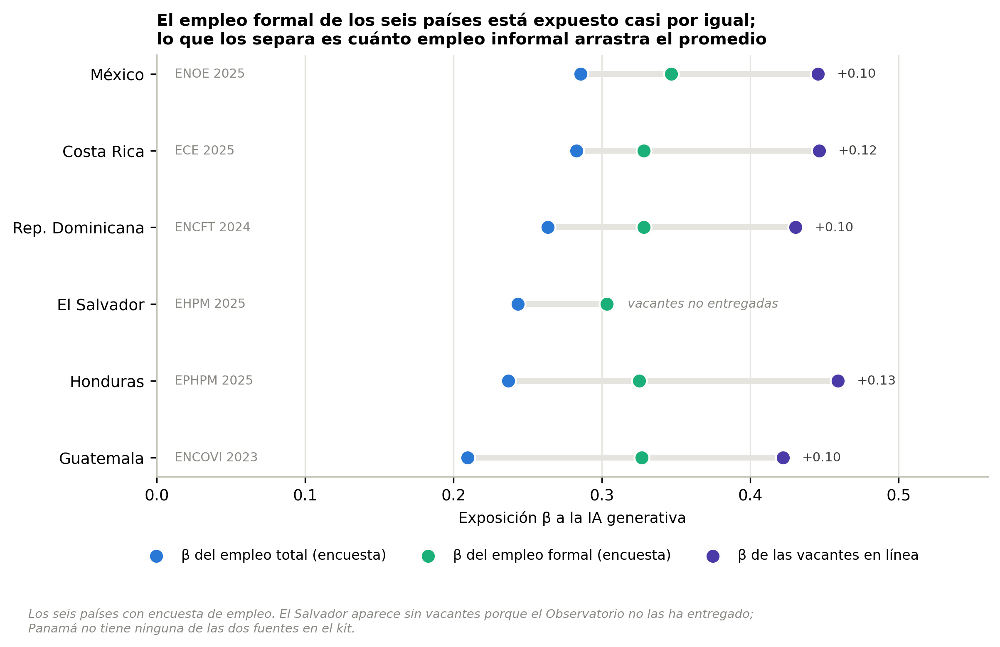
La medida
Qué es exactamente β
La rúbrica de Eloundou et al. (2023) etiqueta cada tarea de forma excluyente: sin exposición, de exposición directa —el modelo por sí solo reduce el tiempo a la mitad— o mediada por software construido sobre él.
- β · lo que mide
- Las tareas de exposición directa más la mitad de las mediadas por software. No es la parte complementaria de la exposición: es una medida compuesta de ambas.
- lo que no mide
- Ahorro potencial de tiempo, compatible tanto con reemplazar al trabajador como con hacerlo más productivo. Una β alta no dice, por sí sola, que el puesto vaya a desaparecer.
Parte I
La oferta: qué muestran las encuestas de empleo
Seis países, entre 2021 y 2025, con el empleo ponderado por los factores de expansión de cada encuesta.
Hallazgo 01
La exposición crece con la calificación, y la capa expuesta es la que habilita el escalamiento
El 54% del empleo de los sectores estratégicos está en ocupaciones con β inferior a 0,15: los ensambladores de equipo eléctrico y electrónico, con 224 mil ocupados en la región, tienen β=0,11. Pero el gradiente por capa ocupacional es nítido, y tiene una consecuencia incómoda: la capa expuesta no es la base operativa sino la calificada, que es la misma que la evidencia econométrica identifica como determinante del escalamiento exportador.
| Capa | β | Ocupados |
|---|---|---|
| Ocupaciones elementales | 0,10 | 58 966 |
| Operadores de planta | 0,10 | 384 815 |
| Oficios y artesanía | 0,21 | 28 049 |
| Servicios y ventas | 0,34 | 10 773 |
| Técnicos | 0,41 | 130 557 |
| Dirección y gerencia | 0,45 | 37 164 |
| Apoyo administrativo | 0,48 | 60 399 |
| Profesionales e ingeniería | 0,56 | 56 099 |
Cobertura: cinco países —México, Costa Rica, Rep. Dominicana, Honduras y El Salvador—. Guatemala queda fuera porque su encuesta pública codifica la ocupación a dos dígitos y no permite el corte por capa. Conviene leer el agregado con una salvedad: México aporta el 82% del empleo de estos sectores, de modo que el gradiente es sobre todo mexicano; los otros cuatro países pesan entre 1% y 7% cada uno.
Las ocupaciones individuales más expuestas combinan oficina y perfil técnico: capturistas de datos (β=0,83), técnicos de operaciones de TIC (0,74), ingenieros electrónicos (0,65) y analistas de sistemas (0,61). Escalar hacia eslabones de mayor valor agregado significa, en estos datos, mover trabajadores hacia ocupaciones más expuestas, no menos.
Hallazgo 02
La cadena regional de valor reparte los nodos, y se ve en las ocupaciones
La Nota Técnica muestra que cables constituye una cadena regional y los dispositivos médicos un enclave extrarregional. Los datos ocupacionales muestran quién ocupa qué nodo. En un mismo sector y con el mismo producto, la función de mayor calificación está concentrada en unos países y ausente en otros.
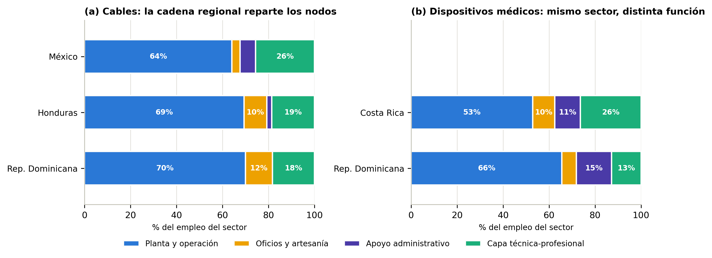
Hallazgo 03
Tener el capital humano no basta: hay que capturar las funciones que lo usan
Si la disponibilidad nacional de terciarios fuera suficiente, los sectores deberían emplear capa técnica en una proporción parecida a la del stock del país. No ocurre. República Dominicana tiene prácticamente el stock terciario de México y la estructura ocupacional de un país de ensamble. Honduras es el caso opuesto: absorbe más capital humano calificado del que su economía tiene disponible, y ahí la restricción sí es de oferta educativa.
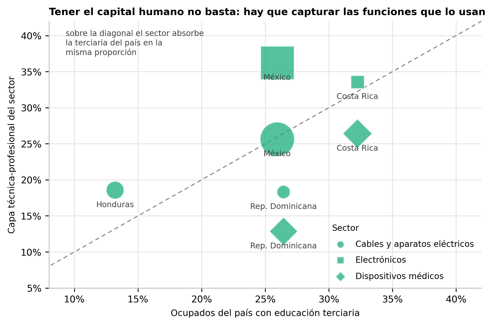
Parte II
La demanda: qué muestran las vacantes en línea
2,59 millones de anuncios del Observatorio Laboral del BID, cinco países, de junio de 2022 a mayo de 2026.
Hallazgo 04
La demanda de habilidades de IA se multiplica por 2,7 en cuatro años
Los campos de habilidades que acompañan a cada vacante no sirven para medir requisitos, así que se procesó el texto completo de 2,5 millones de anuncios con un diccionario propio de 44 términos, cada uno validado contra sus contextos reales. La serie exige una corrección: las descripciones se alargan 38% hacia 2026 y, sin normalizar, crecen incluso el idioma y el software de oficina. Corregido, esos controles quedan planos y sobreviven dos tendencias reales.
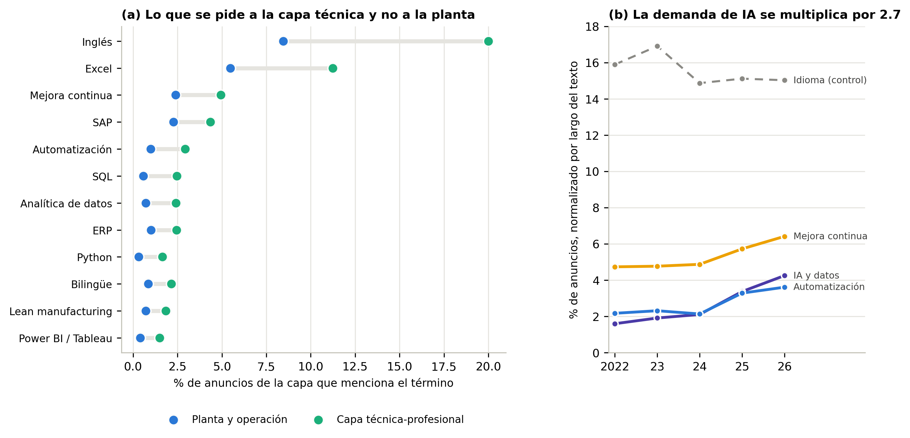
Contexto sectorial y figuras de respaldo
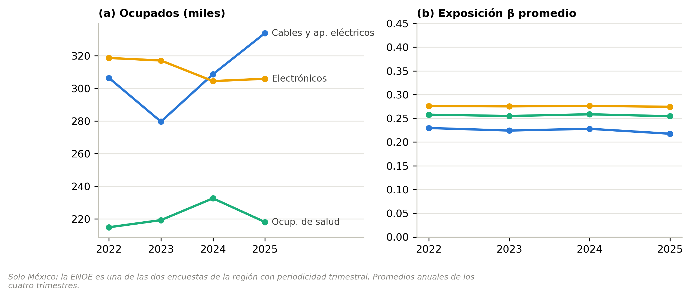
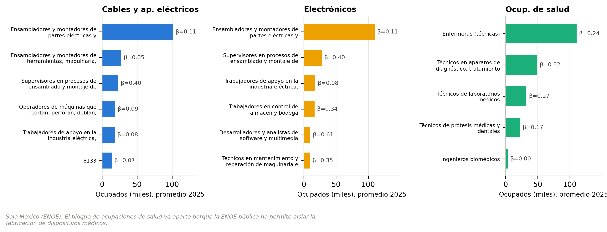
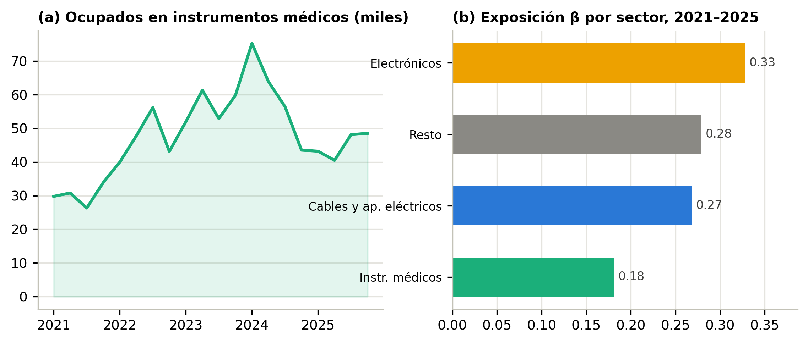
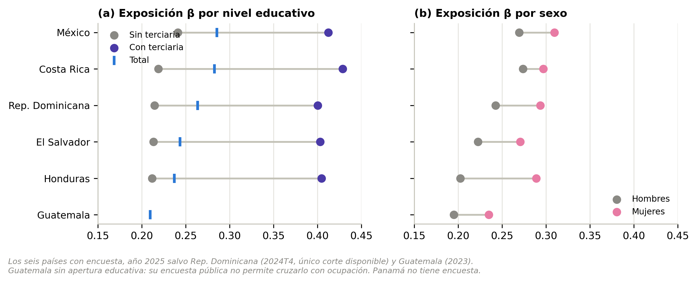
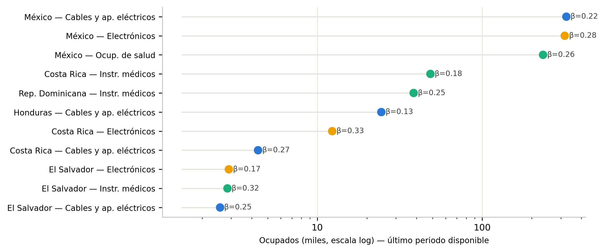
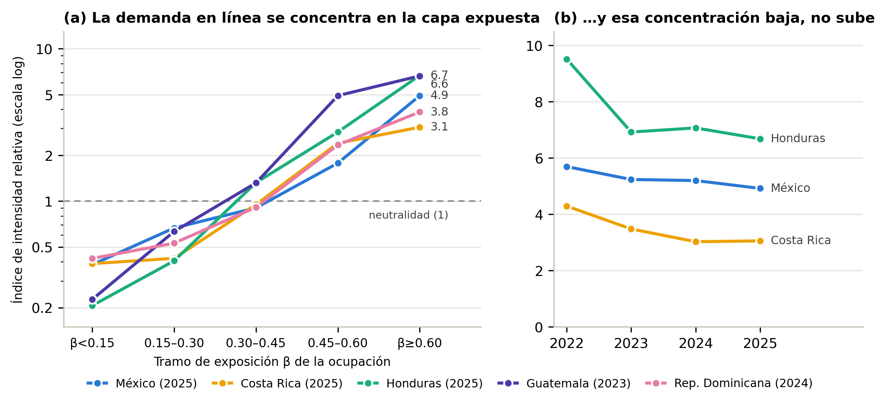
La pregunta de fondo
¿Se alinea con el argumento de la Nota Técnica?
La tesis central es que el capital humano terciario determina el crecimiento exportador de la manufactura compleja. Eso tiene una implicación observable: si los sectores están escalando, su capa calificada debería ganar peso en el empleo; y si la restricción es de oferta, los empleadores deberían pedirla más de lo que el empleo la entrega. Las dos series apuntan en direcciones opuestas, y esa divergencia es el hallazgo más útil de este trabajo.
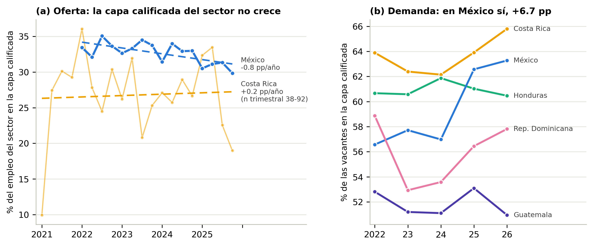
La lectura conjunta respalda el argumento y a la vez lo precisa. Lo respalda porque confirma que el capital humano calificado es el margen que importa: es la capa que la demanda persigue y la que el empleo sectorial no logra ampliar. Lo precisa porque muestra que la restricción no se está resolviendo sola con el auge exportador. Los sectores han creado empleo, pero ensanchando la base operativa. Una política que dé por descontado que el crecimiento exportador arrastrará la calificación de la fuerza laboral no encuentra apoyo en estos datos.
Qué no dicen estos datos
Límites declarados
- México y los dispositivos médicos. La ENOE pública no permite aislar la fabricación de dispositivos médicos: su variable de actividad no llega al nivel de clase. El bloque ocupacional que suele usarse como aproximación mide servicios de salud, no manufactura, y aquí se reporta por separado y con su nombre real.
- Guatemala queda fuera del análisis ocupacional. Su encuesta pública publica la ocupación a dos dígitos, insuficiente para trabajar por ocupación.
- Un empleo poco expuesto es también poco aumentable. La protección frente a la ola actual y el estancamiento en el eslabón de menor valor agregado son, en estos datos, la misma cosa vista desde dos ángulos.
- Las vacantes en línea no son una muestra del mercado. Son una muestra de su capa formal y urbana; el nivel de su exposición refleja qué tipo de puesto se publica, no un desplazamiento de la contratación.
- La prima salarial es imprecisa. El puntaje de exposición no varía entre trabajadores sino entre ocupaciones. Con errores estándar agrupados por ocupación, el efecto estimado sigue siendo positivo pero su intervalo de confianza se abre a ±6,9 puntos porcentuales.
- Panamá no está. El Observatorio entregó cinco de los seis países previstos.